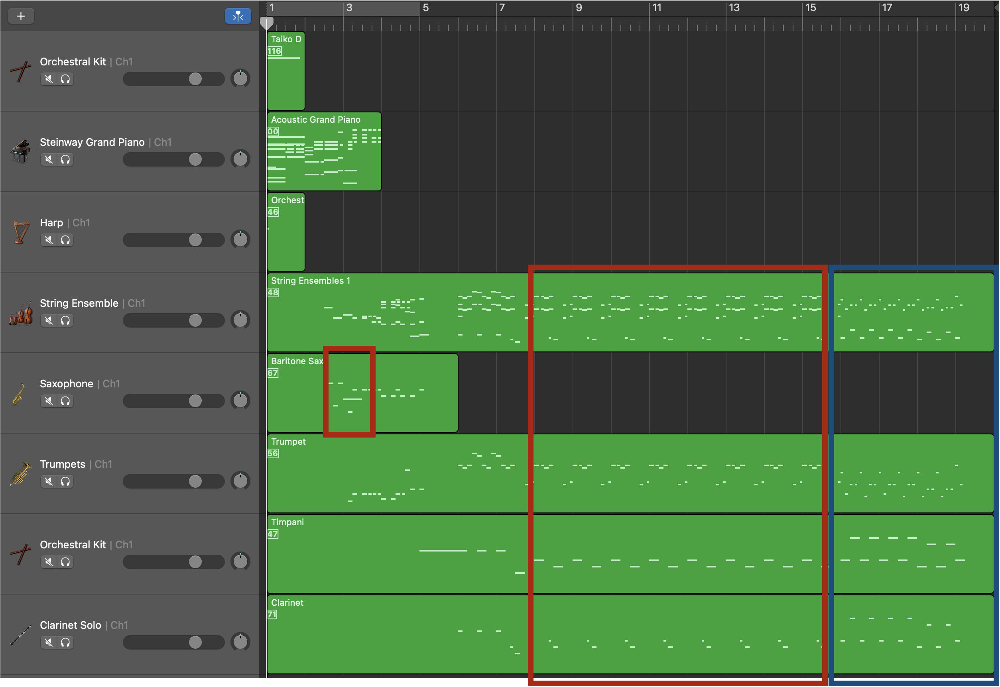

Text2midi: Generating Symbolic Music from Captions
Abstract
This paper introduces Text2midi, a system designed to generate MIDI files from textual descriptions. Leveraging the growing popularity of multimodal generative approaches, Text2midi capitalizes on the extensive availability of textual data and the success of large language models (LLMs). Our end-to-end system harnesses the power of LLMs to generate symbolic music in the form of MIDI files. Specifically, we utilize a pretrained LLM encoder to process captions, which then condition an autoregressive transformer decoder to produce MIDI sequences that accurately reflect the provided descriptions. This intuitive and user-friendly method significantly streamlines the music creation process, eliminating the need to start from scratch as well as enabling them to generate customized musical compositions with ease. We conduct comprehensive empirical evaluations, incorporating both automated and human studies, to demonstrate the efficacy of our approach.
Text2midi examples:
Below are some examples of music generated by Text2midi. The first sample is the one highlighted in the paper, with this description and piano roll:| A haunting electronic ambient piece that evokes a sense of darkness and space, perfect for a film soundtrack. The string ensemble, trumpet, piano, timpani, and synth pad weave together to create a meditative atmosphere. Set in F minor with a 4/4 time signature, the song progresses at an Andante tempo, with the chords F, Fdim, and F/C recurring throughout. |
|  |
| A cheerful and melodic pop Christmas song featuring piano, acoustic guitar, vibraphone, bass, and drums, set in the key of Eb minor with a fast tempo of 123 bpm and a 4/4 time signature, creating a joyful and relaxing atmosphere. |
| A melodic electronic song with ambient elements, featuring piano, acoustic guitar, alto saxophone, string ensemble, and electric bass. Set in G minor with a 4/4 time signature, it moves at a lively Presto tempo. The composition evokes a blend of relaxation and darkness, with hints of happiness and a meditative quality. |
| This motivational electronic and pop song features a clean electric guitar, rock organ, synth voice, acoustic guitar, and vibraphone, creating a melodic and uplifting atmosphere. Set in the key of G# minor with a 4/4 time signature, the track moves at an energetic Allegro tempo of 120 beats per minute. The chord progression of Bbm7 and F# adds to the song's inspiring and corporate feel. |
| This short electronic song in C minor features a brass section, string ensemble, tenor saxophone, clean electric guitar, and slap bass, creating a melodic and slightly dark atmosphere. With a tempo of 124 BPM (Allegro) and a 4/4 time signature, the track incorporates a chord progression of C7/E, Eb6, and Bbm6, adding a touch of corporate and motivational vibes to the overall composition. |
| An energetic and melodic electronic trance track with a space and retro vibe, featuring drums, distortion guitar, flute, synth bass, and slap bass. Set in A minor with a fast tempo of 138 BPM, the song maintains a 4/4 time signature throughout its duration. |
| A short but energetic rock fragment in C minor, featuring overdriven guitars, electric bass, and drums, with a vivacious tempo of 155 BPM and a 4/4 time signature, evoking a blend of dark and melodic tones. |
| TA classical piece with a cinematic flair, this composition is characterized by its fast tempo and 4/4 time signature. The soprano saxophone and flute take turns leading the melody, supported by the lush tones of the string ensemble, acoustic bass, and pan flute. Set in the key of F minor, the harmonic landscape is painted with the chords Gm7b5, Cm7b5, Fm7, Eaug, and Ab/Eb. The overall mood evokes images of film, with hints of Christmas, drama, documentary, and adventure. |
| A slow, dark, and emotional classical piece featuring cello, violin, and viola, likely to be used in a dramatic film soundtrack. The composition is in the key of C minor with a 4/4 time signature, and the main chord progression consists of Cm, G, Cm, and Fm. |
| A slow and emotional classical piece, likely used in a film soundtrack, featuring a church organ as the sole instrument. Written in the key of Eb major with a 3/4 time signature, it evokes a sense of drama and romance. The chord progression of Bb7, Eb, and Ab contributes to the relaxing atmosphere throughout the song. |
| A cinematic electronic soundtrack that evokes an epic and dark atmosphere, featuring cello, contrabass, and drums. The song is set in A minor with a moderate tempo and a 4/4 time signature, creating an emotional and action-packed ambiance suitable for film. |